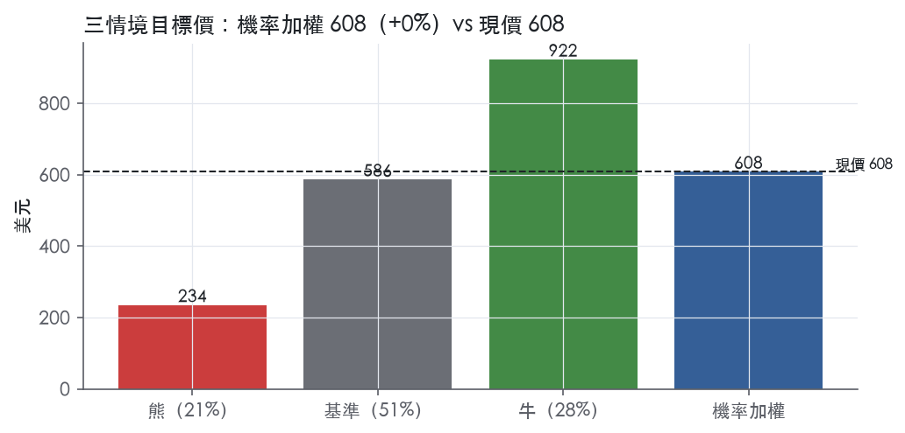
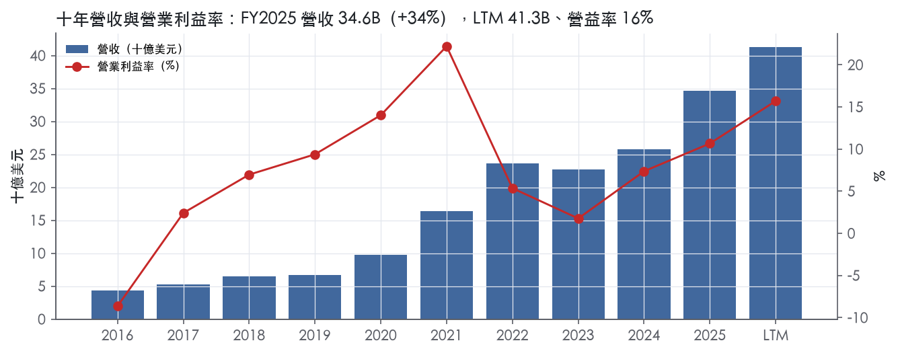
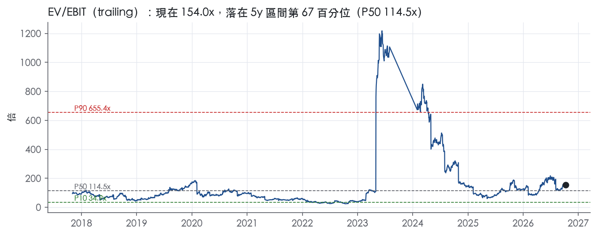
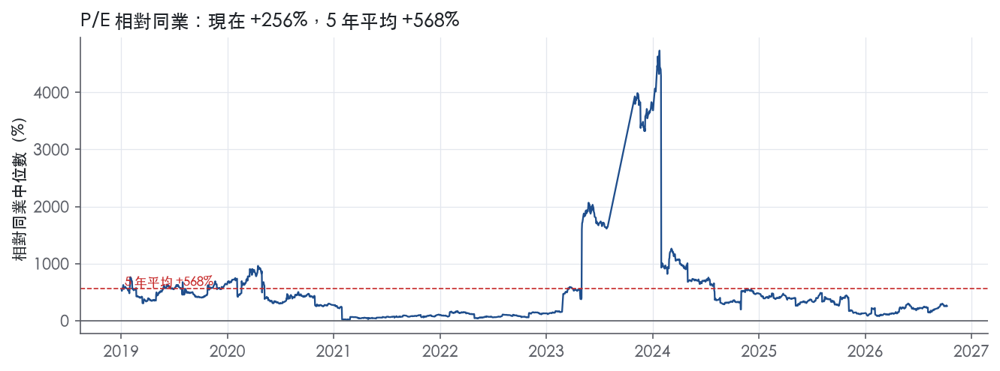
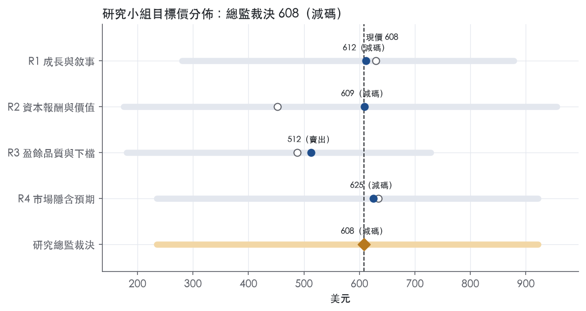
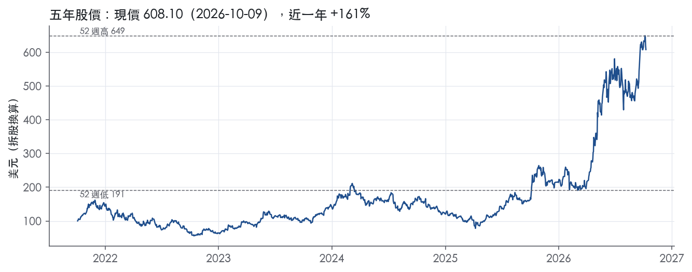

評等總表 › 資訊科技 › AMD
放量兌現但已入價，相對減碼｜評等 減碼｜目標價 608
| 報告日 | 評等 | 目標價 | 當時股價 | 超額報酬 |
|---|---|---|---|---|
| 2026-10-09 | 減碼 | 608 | 608 | -9.9% |
| 評等 | 減碼 |
| 12 個月目標價 | 608 美元 |
| 現價 | 608.10 美元（2026-10-09） |
| 預期報酬 | 股價 +0.0%＋股息 0.0%＝總報酬 +0.0%；同業籃門檻 10.0%，超額 -9.9% |
| 估值方法 | EV/EBITA 52.0x，套在第 5–8 季的EBITA（也就是一年後的未來四季） |
| 三情境 | 熊 234／基準 586／牛 922 |
| 研究流程 | 四位研究員兩輪辯論＋研究總監裁決 |
| 資料來源 | SEC EDGAR XBRL、Tiingo、FRED（全免費） |
放量兌現但已入價，相對減碼（研究總監裁決，四位研究員兩輪辯論後）
評等 減碼｜12 個月目標價 608 美元（總監三情境機率加權 606 與研究員中位數 610 各半）｜現價 608.10（2026-10-09）
預期報酬：股價 +0.0%＋股息 0.0%＝總報酬 +0.0%。同業籃門檻 10.0%，超額 -9.9%。
估值方法：EV/EBITA 52.0x，套在第 5–8 季的EBITA（也就是一年後的未來四季）。三情境：熊 234（21%）／基準 586（51%）／牛 922（28%）。
什麼會讓研究總監改變看法：若 2026-11 Q3 財報的 Q4 指引顯示 DC 續加速且 Helios 出貨領先、或 FY2026 10-K 揭露 GW 協議含最低採購承諾，y2 上修到 32% 以上、熊機率降回 18%、立場轉中性；若 Q3 營收低於 12.7B 或 BIS 新增 MI4xx 出口限制，熊升為基準。
| 過去四季（實際，FY2026Q2） | 未來四季 | 第 5–8 季 | 第 9–12 季 | |
|---|---|---|---|---|
| 營收（B） | 41.3B | 58.7B | 76.2B | 86.9B |
| 營收成長 | 39.5% | 42.0% | 30.0% | 14.0% |
| 營業利益率 | 15.7% | 20.0% | 24.0% | 25.0% |
| EPS（美元） | 3.89 | 6.04 | 9.38 | 11.04 |
| EPS 成長 | 123.2% | 55.2% | 55.2% | 17.7% |
| 每股股息（美元） | — | 0.00 | 0.00 | 0.00 |
| P/E（現價） | 156.2x | 100.6x | 64.8x | 55.1x |
| 股息殖利率（現價） | — | — | — | — |
過去四季為申報數字；預測為研究總監的假設、程式計算。倍數與殖利率都用現價計算，用來看現價對應各期獲利的高低。
| 情境 | 機率（歷史） | 故事 | 未來四季營收成長 | 第 5–8 季營益率 | 倍數 | 目標價 | 股價漲跌 |
|---|---|---|---|---|---|---|---|
| 熊 | 21%（19%） | 風險表第 1 條為主（GW 客戶遞延、合約無最低採購可無罰款撤銷），第 3、4 條加速；費用、SBC、攤銷不縮致營益率停在 17%，倍數回同業水準＝前瞻帶 P50；觸發 2026-11 Q3、2027-02 Q4 財報 | 30.0% | 17.0% | 36.0x | 234 | -61.5% |
| 基準 | 51%（53%） | 放量照 R3 路徑兌現，2027 展望顯示降檔，一年後倍數由頂部退到前瞻帶 P75 附近 | 42.0% | 24.0% | 52.0x | 586 | -3.6% |
| 牛 | 28%（28%） | MI450/Helios 快於指引、OpenAI 第二個 GW 提前到 2027，上行來自盈餘，倍數止於帶 P90 | 55.0% | 28.0% | 58.0x | 922 | 51.6% |
目標價由程式依研究總監的驅動與倍數計算；機率由研究總監給定。括號內是歷史頻率：把這檔股票過去十年 12 個月報酬的波動形狀，置中在基準情境，結果落在各情境附近的比例。

四位研究員用不同方法各自估值，回應研究總監的質疑後交出第二輪，最後由總監逐點裁決。各研究員的主張見第七章，裁決理由見第八章，完整論證見《研究底稿》。
| 立場（一輪→二輪） | 加權目標價（一輪→二輪） | 評等（一輪→二輪） | 第二輪倍數 | 熊～牛目標價 | |
|---|---|---|---|---|---|
| R1 成長與敘事 | 中性→看空 | 629→612 | 減碼→減碼 | 85.0x | 280～878 |
| R2 資本報酬與價值 | 看空→看空 | 452→609 | 賣出→減碼 | 89.8x | 175～956 |
| R3 盈餘品質與下檔 | 看空→看空 | 488→512 | 賣出→賣出 | 44.0x | 180～729 |
| R4 市場隱含預期 | 中性→看空 | 634→625 | 減碼→減碼 | 52.0x | 234～922 |
| 研究總監裁決 | 看空 | 608 | 減碼 | 52.0x | 234～922 |
目標價由程式依各自的驅動與倍數計算；評等＝機率加權總報酬 − 同業籃門檻。
AMD 是一家以 x86 CPU 與 GPU 為核心、靠併購補齊網路與系統整合能力的高效能運算與 AI 晶片供應商。「AMD drives innovation in high performance and AI computing to solve the world's most important challenges. AMD technology powers billions of experiences across cloud and AI infrastructure, embedded systems, AI PCs and gaming.」¹公司產品線涵蓋資料中心 AI 加速器、伺服器 CPU、GPU、DPU、AI NIC、FPGA，一路延伸到桌機／筆電 CPU、遊戲主機半客製化 SoC，以及車用、工控、航太國防用的嵌入式晶片¹。客戶端是超大規模雲端業者、伺服器與 PC OEM/ODM、獨立經銷商，以及遊戲主機廠（Sony、Microsoft）¹。LTM 營收 41.30B 美元，FY2025 全年營收 34.64B 美元、年增 34.3%,是公司近年成長最快的一段。
公司自 2025 財年起把三個分部簡化為 Data Center、Client and Gaming、Embedded¹，Data Center 是目前的成長火車頭、Client and Gaming 是現金流基本盤、Embedded 是規模最小但毛利結構獨立的業務。
Data Center 分部主要是伺服器 CPU（AMD EPYC 系列）、AI 加速器（AMD Instinct MI200~MI350 系列、新發布的 MI400 系列）、GPU、DPU（AMD Pensando）、AI NIC 與 FPGA/adaptive SoC¹。FY2026Q2 該分部營收 6.7B 美元，年增 107%，由 EPYC 與 Instinct 需求驅動²，佔當季公司總營收約 58%²；FY2026Q1 該分部營收 5.8B 美元、年增 57%³。這個分部在過去兩季是唯一維持三位數年增的業務，已經取代 Client 成為主要收入與獲利引擎。
Client and Gaming 分部整合桌機／筆電 CPU、APU、晶片組、獨顯 GPU 與半客製化遊戲主機 SoC¹。FY2026Q2 該分部營收 3.8B 美元、年增 6%，其中 Client 業務 3.1B 美元年增 23%（Ryzen 需求帶動），Gaming 業務 779M 美元年減 31%（半客製化收入下滑拖累）²。FY2026Q1 Client and Gaming 合計 3.6B 美元、年增 23%，Client 2.9B 美元年增 26%，Gaming 720M 美元年增 11%³。可以看到 Gaming 子業務（主機半客製化晶片）在 2026Q2 轉為明顯年減，是分部內部表現分歧最大的一塊。
Embedded 分部主要是嵌入式 CPU、APU、FPGA 與 adaptive SoC，應用在航太國防、車用、工控、通訊基礎設施等市場¹。FY2026Q2 該分部營收 977M 美元、年增 19%，FY2026Q1 為 873M 美元、年增 6%，公司說法是「多個終端市場需求轉強」²³。各分部佔營收細項比重（如 Embedded 占全公司比重）10-K 未揭露，僅能用單季絕對數字推算。
客戶集中在三類：超大規模資料中心、OEM/ODM、獨立經銷商與系統整合商。「Our Data Center Segment customers consist primarily of hyperscale data centers, original equipment manufacturers (OEMs), original design manufacturers (ODMs), system integrators and independent distributors in both domestic and international markets.」¹Client and Gaming 分部客戶則是「PC OEMs, a network of independent distributors」以及遊戲主機、掌機製造商與代工廠¹。Embedded 產品銷往「aerospace and defense, automotive, industrial, vision and healthcare, communications infrastructure」等極分散的終端市場，透過直銷或經銷商/OEM網路¹。公司明言「a small number of customers will continue to account for a substantial part of AMD's revenue and receivables in the future」¹，說明大客戶集中度是公司自己揭露的風險。地區別營收拆分 10-K 未在 Item 1 揭露（需查 Note 4 財報附註）。製造面上，公司仰賴 TSMC 生產主力 HPC/FPGA 晶圓，GlobalFoundries 供應 12nm/14nm 製程的 HPC 產品，封測則交給亞太地區的 ATMP 夥伴，包括與 Tongfu 的兩個合資廠、SPIL、KYEC¹，這代表 AMD 是純 Fabless 模式、晶圓代工高度集中於台灣。
過去四季的核心敘事是：出口管制衝擊出清之後，Data Center 業務連續加速，帶動營收與利潤率同步擴張。FY2025Q3（2025-09-27）營收 9.25B 美元、年增 35.6%，毛利率 51.7%、營益率 13.7%（is系列對應 FY2025Q3 快照）。FY2025Q4（2025-12-27）營收 10.27B 美元、年增 34.1%，毛利率升至 54.3%、營益率 17.1%，EPS 0.92 美元。FY2026Q1（2026-03-28）營收 10.25B 美元、年增 38%，GAAP 毛利率 53%、營益率 14%，淨利 1.4B 美元、EPS 0.84 美元³，公司當時給 FY2026Q2 指引為「approximately $11.2 billion, plus or minus $300 million」、non-GAAP 毛利率約 56%³。FY2026Q2（2026-06-27）營收 11.54B 美元、年增 50.1%，GAAP 毛利率 54%、營益率 17.3%，淨利 2.3B 美元、EPS 1.38 美元²，Data Center 營收 6.7B 美元、年增 107%，占當季營收 58%²。公司對 FY2026Q3 指引為「approximately $13 billion, plus or minus $300 million」，隱含年增約 41%、季增約 13%，non-GAAP 毛利率約 56%²。CEO Lisa Su 說法是「We enter the second half with strong momentum as EPYC demand accelerates, Instinct deployments scale and Helios begins to ramp」²；CFO Jean Hu 則說「We expect Data Center sales to accelerate in the second half of 2026」²。LTM 自由現金流 8.40B 美元，對比 FY2025 全年 FCF 6.74B 美元（資料包標示為 FCF 欄），顯示近兩季現金轉換效率明顯提升。
公司把自己定位成「the end-to-end AI leader」，理由是「Our broad portfolio spans supercomputing, cloud, edge, embedded and end devices」¹。核心成長引擎是資料中心 AI 加速器與伺服器 CPU 的年度節奏升級：「We advanced our AMD AI GPU roadmap to deliver an annual cadence of leadership for AMD Instinct solutions」，並推出「Helios」機沃級平台整合 CPU、GPU 與網路產品¹。公司透過併購補強全端能力，包括收購 ZT Systems 的設計業務以加速 AI 基礎設施部署、以及多筆軟體與光通訊相關收購¹。最關鍵的策略性訊號是與 OpenAI 的供貨協議——「we entered into a product purchase agreement with OpenAI OpCo, LLC... to deploy 6 gigawatts of AMD GPUs, with the deployment of the first gigawatt of capacity powered by our AMD Instinct MI450 series products」¹，以及之後與 Anthropic「up to 2 gigawatts of MI450 Series GPUs」、與 Microsoft Azure 擴大 Helios 與 Pensando DPU 部署的合作²。公司在 PC 端的說法是靠 NPU 整合與 Ryzen AI 路線圖維持差異化：「AMD was the first company to integrate a dedicated neural processing unit (NPU) on the same SoC as an x86 CPU for AI PCs」¹。
整體看，AMD 的故事已經從「CPU 份額戰」轉成「用 GPU+網路+機櫃級系統卡位超大規模 AI 資本支出」，OpenAI／Anthropic／Microsoft 的多年期算力承諾是股價計入的關鍵催化劑。Gaming 子業務的連續雙位數衰退，以及 Client 業務對 PC 週期的敏感度，是這個成長故事裡被稀釋掉、但仍存在的風險。現在 trailing P/E 156.2x、EV/Sales 24.2x 已站上過去五年高分位（P/E 69.1 百分位、EV/Sales 98.8 百分位），估值完全建立在 Data Center 指引能兌現的假設上，一旦 FY2026Q3 財報不如「約 13B 美元」指引，回檔風險不小。

AMD 的護城河評為窄，趨勢穩定；目前的資本報酬並不支持這個評級，我們保留窄評級，但附帶明確的下修條件。護城河來自兩處：x86 雙寡占下的 IP 與交叉授權，以及 FPGA 工具鏈和半客製化 SoC 帶來的轉換成本。資料中心 GPU 對 Nvidia 沒有護城河，AMD 在這塊是規模追趕者，不是規則制定者。FY2022 至 FY2025 的 ROIC 連續四年低於資本成本代理值，這是本評級最大的弱點，下文第三節會正面處理。
無形資產（IP 組合與授權）：AMD 的 IP 優勢在於整個專利組合與交叉授權取得的「入場資格」，單一專利本身不構成壁壘。公司揭露「we have approximately 18,900 patent matters worldwide consisting of approximately 12,600 issued patents and 6,300 patent applications pending」¹。公司也自承「We do not believe that any individual patent, or the expiration of any patent, is or would be material to our business」¹。關鍵在交叉授權：「we have numerous cross-licensing and technology exchange agreements with other companies」，且「These licenses support our continuing ability to make and sell our products」¹。CPU 市場上，「Our primary competitor in the supply of CPUs and APUs is Intel」¹，代表 x86 伺服器與 PC CPU 實質上由兩家供應，這是 EPYC 與 Ryzen 定價力的根源。
轉換成本：轉換成本集中在 FPGA／adaptive SoC 與遊戲主機半客製化晶片兩塊，資料中心 GPU 不在其列。FPGA 客戶的設計建立在 AMD 工具鏈上，「Our AMD Vivado™ Design Suite provides hardware design teams with the tools and methodology needed to program FPGAs and adaptive SoCs」¹。公司也寫明「Continued use of such software and technology is important to the operation of the design tools upon which our customers depend」¹。半客製化業務是「semi-custom solutions deeply co-engineered with our customers」，並且「We are the market share leader in semi-custom game console products」¹。主機一個世代鎖定一顆 SoC，換供應商等於重做整個平台，這是教科書式的轉換成本。
網路效應、成本優勢、效率規模三類證據不足，不列入。ROCm 是開放生態系，但沒有證據顯示它已形成開發者規模上的自我強化。成本面，AMD 的晶圓仰賴 TSMC 與 GF 代工，沒有獨占成本結構。
數字只支持一半：毛利率看得到持續擴張的定價力，ROIC 卻看不到穩定的超額報酬。
下修條件：FY2026 全年 ROIC 若仍低於資本成本代理值，評級下修為無。目前 FY2026Q2 營益率 17.3%、LTM EBITA 8.75B 美元，利潤擴張方向正確，但尚未在 ROIC 上兌現。
最大的侵蝕力量是客戶自研晶片與 Arm 架構，兩者分別攻擊資料中心與 x86 雙寡占。公司揭露「some of our customers are internally developing their own data center microprocessor products and accelerator products which could impact the available market for our products」¹。PC 端則「could lead to further adoption of Arm-based PC solutions」¹。x86 雙寡占一旦被 Arm 稀釋，第一類優勢來源就會縮水。
GPU 端 AMD 處於挑戰者位置，Nvidia「is the discrete GPU market share leader」¹。合約結構顯示客戶黏著度有限：銷售「do not typically include any commitment or requirement for minimum product purchases」¹，訂單「may be revised or canceled without penalty」¹。客戶集中也放大議價風險，公司預期「a small number of customers will continue to account for a substantial part of AMD's revenue and receivables in the future」¹。製造全部委外給 TSMC 等代工廠，產能與成本不在自己手上。
護城河只支持目標倍數相對半導體同業持平，不支持溢價；任何高於同業的倍數都必須來自成長假設，不能來自護城河。窄評級加上 ROIC 尚未回到資本成本之上，超額報酬的持續期間應抓 5 年左右，之後倍數收斂到同業水準。現在 EV/Sales 24.2x 落在五年 98.8 百分位，市場價格已隱含寬護城河等級的持續期，這是估值研究員應優先質疑的假設。
| 指標 | 最新 | 十年平均 | 標準差 | 最低 | 最高 |
|---|---|---|---|---|---|
| ROIC | 6.7% | 26.3% | 24.9% | 0.8% | 77.7% |
| 毛利率 | 49.5% | 42.0% | 7.8% | 23.2% | 49.5% |
| 營業利益率 | 10.7% | 7.1% | 7.7% | -8.6% | 22.2% |
| FCF 利潤率 | 19.4% | 7.5% | 7.6% | -2.0% | 19.6% |
| ROE | 7.2% | 18.6% | 21.5% | -6.2% | 57.5% |
程式計算。資本成本代理值（10 年債＋5%）：10.2%；ROIC 平均減資本成本：16.0%；ROIC 有資料的 9 年中，高於資本成本 5 年。
AMD 的現金流確實跟得上帳面淨利，LTM 營業現金流／淨利達 1.57x、自由現金流／淨利 1.31x，應計比率為負值，三張表都是綠燈【判／量化底稿】。但 SBC／營收、稀釋股數年變動、（股利＋回購）／淨利三項亮黃燈，加上程式標出三次歷史淨利率跳動缺乏可核實的原文佐證，整體評級落在中品質，不到高品質的門檻。
現金是跟上的，而且跟得比帳面淨利還快。LTM 營業現金流／淨利 1.57x、近三年平均 1.86x、十年平均 1.08x，皆落在綠燈區（規則：≥1.00x 綠）【判／量化底稿】。自由現金流／淨利 LTM 1.31x、近三年 1.44x、十年平均 1.15x，同樣綠燈，代表扣掉資本支出後盈餘仍有現金支撐【判／量化底稿】。應計比率 LTM 為 -4.4%、近三年 -2.6%、十年平均 0.6%，負值越大代表盈餘越不靠應計項目堆砌，是正向訊號【判／量化底稿】。營運資金面也乾淨：FY2025 應收帳款成長減營收成長為 -32.4pp，存貨成長減營收成長為 +3.8pp，兩者都遠低於 15pp 的紅線，沒有靠拉長應收或堆積存貨撐盈餘的跡象【判／量化底稿】。
Q2'26 GAAP 淨利 2,297M、稀釋 EPS 1.38；非 GAAP 淨利 2,760M、稀釋 EPS 1.66，差距主要來自五項調整²。營業利益層面：加回股權酬勞 503M、收購無形資產攤銷 544M、收購相關及其他成本 40M、法律訴訟損失準備 17M，使非 GAAP 營業利益從 GAAP 的 1,990M 拉高到 3,094M²。淨利層面再加回長期投資（利得）損失 -483M、投資公司權益法收益 -6M、所得稅準備調整 -161M、停業業務（ZT Systems 製造事業）損益 8M²。我的判斷：股權酬勞 503M 是真實成本，不應無條件加回，因為它直接稀釋股東權益，這也對應計分表 SBC／營收 LTM 4.6%、近三年 5.4% 的黃燈。收購無形資產攤銷 544M 雖是非現金項目，但 AMD 是連續併購者（Xilinx、ZT Systems 等），這類攤銷會持續發生，長期看應視為部分真實成本而非純粹一次性。長期投資利得 -483M 波動性最大，屬於非營業性公允價值變動，排除在非 GAAP 外合理，但也說明本季 GAAP EPS 的跳升有相當比例來自這個非經常性項目，而非營運本身。
資產負債表是淨現金狀態，槓桿不是問題。淨負債為 -9.88B，淨負債／EBITDA 近三年平均 -0.80x、十年平均 -0.61x，皆為綠燈【判／量化底稿】。利息保障倍數 LTM 44.1x、近三年 17.5x、十年平均 21.2x，遠高於 8x 的綠燈門檻，付息能力沒有壓力【判／量化底稿】。股東回饋方面要分開看：LTM（股利＋回購）／淨利僅 4.8%，但近三年平均 66.1%、十年平均高達 106.9%，超過 100% 代表在 FY2022、FY2023 淨利偏低的年度，公司仍維持高額回購，回饋金額超過當期淨利【判／量化底稿】。因為公司本身淨現金、利息保障極強，這不是舉債回購，而是用資產負債表上的現金緩衝度過淨利波動期，風險可控。稀釋股數變動 LTM +0.5%、近三年 +1.4%、十年平均 +8.1% 黃燈，顯示即使有回購，SBC 發行的新股在長期仍蓋過了回購的減股效果，十年維度看股東是被淨稀釋的【判／量化底稿】。
SBC／營收黃燈（LTM 4.6%、近三年 5.4%）：真問題但程度可控。本系統不加回 SBC，且 8-K 顯示單季 SBC 在營業利益層就有 503M²，隨著 Data Center 業務擴張、股價上漲帶動的股權獎酬市值提升，這項成本短期內看不出下降趨勢，屬於結構性而非一次性，估值時應維持不加回的立場。
稀釋股數年變動黃燈（十年平均 +8.1%）：是真問題，但近期已改善。十年維度的高稀釋主要落在 Xilinx 併購發股（FY2021-2022 稀釋股數從 1.23B 跳到 1.57B）的歷史期間，近三年平均已收斂到 +1.4%、LTM 僅 +0.5%，顯示近期股數已大致穩定，歷史紅旗不應套用在當前估值【判／量化底稿】。
（股利＋回購）／淨利十年平均 106.9%、黃燈：可解釋為週期性現象。原因是 FY2022-2023 淨利基數低（0.84、0.53 EPS）但公司仍維持一定回購節奏，比率因分母小而被放大，並非舉債回饋——淨負債全程為負（淨現金）佐證了這一點【判／量化底稿】。隨 FY2025 淨利回升到 4.33B，LTM 比率已回落到 4.8%，這條紅旗屬於分母效應造成的假警報。
程式標出的三條淨利率跳動紅旗（FY2016→17 +11pp、FY2019→20 +20pp、FY2021→22 -14pp）：本次拿到的 10-K 節錄僅涵蓋 Item 1 Business 內容，並未包含 Item 7 MD&A 對這些年度損益變動的具體說明，因此無法在原文中找到直接佐證這三次跳動的一次性項目。這些期間（FY2016-2022）距離當前 LTM（FY2026Q2）已有 4-10 年，且近三年營益率走勢平穩向上（FY2023 1.8%→FY2024 7.4%→FY2025 10.7%，資料包年度表），不影響對目前盈餘品質的判斷，但由於缺乏原文佐證，不能排除其中含有未揭露的一次性損益，列為未解決項目，建議估值研究員知悉但不需對當前倍數額外打折。
估值應以 GAAP 稀釋 EPS 為主要基準，非 GAAP EPS 1.66 需扣除股權酬勞與長期投資利得的影響後再參考，因為 SBC 是真實稀釋成本、投資利得是非經常性波動。目前 trailing P/E 156.2x 已處於近五年 69.1% 分位、遠高於十年中位數 113.7x，在淨現金、利息保障 44.1x 的條件下槓桿不構成限制倍數的理由，但現有估值已完全反映成長預期，盈餘品質的黃燈（SBC、長期稀釋）支持對盈餘做小幅折價，而非全盤採信非 GAAP 數字。
| 項目 | LTM | 近三年 | 十年 | 燈號 | 規則 |
|---|---|---|---|---|---|
| 營業現金流／淨利 | 1.57x | 1.86x | 1.08x | 綠 | ≥1.00x 綠、<0.80x 紅 |
| 自由現金流／淨利 | 1.31x | 1.44x | 1.15x | 綠 | ≥0.90x 綠、<0.60x 紅 |
| 應計比率（(淨利−CFO)／平均總資產） | -4.4% | -2.6% | 0.6% | 綠 | ≤0.0% 綠、>5.0% 紅 |
| SBC／營收 | 4.6% | 5.4% | 3.5% | 黃 | ≤3.0% 綠、>8.0% 紅 |
| 淨負債／EBITDA | — | -0.80x | -0.61x | 綠 | ≤1.50x 綠、>3.00x 紅 |
| 利息保障倍數（營業利益／利息） | 44.1x | 17.5x | 21.2x | 綠 | ≥8.00x 綠、<3.00x 紅 |
| 稀釋股數年變動 | 0.5% | 1.4% | 8.1% | 黃 | ≤0.0% 綠、>3.0% 紅 |
| （股利＋回購）／淨利 | 4.8% | 66.1% | 106.9% | 黃 | ≥50.0% 綠、<0.0% 紅 |
| 應收帳款成長 − 營收成長（FY2025） | -32.4pp | — | — | 綠 | ≤5pp 綠、>15pp 紅 |
| 存貨成長 − 營收成長（FY2025） | +3.8pp | — | — | 綠 | ≤5pp 綠、>15pp 紅 |
程式計算；燈號以 LTM（無則近三年平均）判定。
| 風險 | 觸發指標（看什麼數字、在哪裡看） | 對 EPS 的影響方向與粗略幅度 | 未來 12 個月發生機率 | 出處 |
|---|---|---|---|---|
| 大客戶集中度：少數超大規模／OEM客戶決定 Data Center 營收節奏 | 季報 Data Center 分部營收年增／季增（8-K）；個別大客戶（OpenAI、Anthropic、Microsoft）是否延後或縮減算力部署公告 | 負向，大：Data Center 已佔當季營收 58%（²），任何單一大客戶需求下修會直接拖累集團營收與毛利率 | 中 | ⁴＋² |
| 半導體產業週期性下行，去化庫存與 ASP 下跌 | 毛利率季度變化（8-K）；公司自身存貨水位與下一季指引區間 | 負向，大：公司已明言「We have incurred substantial losses in previous downturns, due to substantial declines in average selling prices」⁴ | 中 | 10-K 年報 FY2025 Item 1A（風險因素） |
| 競爭對手（Intel、Nvidia）價格與結盟策略升級，侵蝕份額與單價 | Nvidia/Intel 聯盟後續產品與定價公告；AMD 每季 ASP、分部毛利率 | 負向，中：公司點名「Nvidia announced a partnership and investment in Intel... may result in increased competition and pricing pressure」⁴ | 中 | 10-K 年報 FY2025 Item 1A（風險因素） |
| 出口管制／關稅等政府行動限制產品銷往特定客戶（如對中國 AI 加速器出口限制） | 美國商務部／BIS 新規公告日期；季報中是否再出現類似 FY2025Q2 的「inventory and related charges due to export control」項目 | 負向，中：FY2025Q2 已實際發生 800M 美元因 MI308 出口管制產生的庫存減記（²附註1） | 中 | ⁴＋² |
| Gaming（半客製主機 SoC）持續雙位數衰退，拖累 Client and Gaming 分部 | 季報 Gaming 業務營收年增（8-K 分部細項） | 負向，小：FY2026Q2 Gaming 營收 779M 美元、年減 31%（²） | 高 | 8-K 財報新聞稿（2026-08-04） |
客戶集中度是目前最值得盯的風險，因為它同時是「機率中但一旦發生幅度最大」的組合。公司在風險因子摘要裡直接寫「The loss of a significant customer may have a material adverse effect on us」，並承認「a small number of customers will continue to account for a substantial part of AMD's revenue and receivables in the future」⁴。業務概況章也確認 Data Center 客戶主要是 hyperscale data centers、OEM/ODM¹，而 2026Q2 這個分部已經是公司收入的 58%²。股價計入的 OpenAI（6 GW）、Anthropic（2 GW MI450）、Microsoft Azure Helios 擴大部署等多年期承諾²，本質上是集中度風險的放大版——任何一家的資本支出計畫調整，都會直接衝擊 Data Center 的年增假設，而目前 FY2026Q3 指引隱含年增約 41%²，市場沒有太多容錯空間。
半導體週期性下行是公司自己在風險摘要第一項就列出的結構性風險：「The semiconductor industry is highly cyclical and has experienced severe downturns that have materially adversely affected...our business in the future」⁴。公司明確說過去的下行週期造成「substantial losses...due to substantial declines in average selling prices」⁴。目前 trailing P/E 156.2x 處於過去五年 69.1 百分位、EV/Sales 24.2x 處於 98.8 百分位，估值對任何週期轉弱的容忍度極低。
競爭格局惡化特別值得注意的是 2025 年 9 月 Nvidia 入股 Intel 並合作新一代資料中心與用戶端平台⁴。這改變了 AMD 過去「夾在 Intel 與 Nvidia 中間但各自競爭」的格局，變成可能面對兩大對手協同定價與產品組合的局面，公司自己承認這「could materially adversely impact our business, financial condition and margins」⁴。
出口管制風險不是假設性的——FY2025Q2 已經實際發生，GAAP 數字裡包含「$800 million in inventory and related charges due to the U.S. Government's export control on AMD Instinct MI308 data center GPU products」²，這筆減記直接把當季營業利益拉成負值（Q2'25 Operating income $(134)M）（8-K 財務表）。10-K 風險因子也列「Government actions and regulations, including but not limited to export regulations...may limit our ability to export our products to certain customers」⁴。只要美中 AI 晶片出口政策再收緊一次，同樣的減記模式可能重演。
Gaming 業務結構性衰退幅度相對小，但機率最高、最容易被忽略在「Data Center 敘事」之下。FY2026Q1 Gaming 還年增 11%、FY2026Q2 已轉為年減 31%（³、²），公司給的理由是「due to lower semi-custom revenue」²。10-K 風險因子也點出半客製 SoC 業務依賴主機世代週期與客戶產品成功與否⁴，這塊占營收比重雖小，但季度波動劇烈，是財報裡最先出現雜訊的分部。
倍數本身的風險沒有被 10-K 揭露，但目前 EV/Sales 24.2x 已站在過去五年 98.8 百分位、P/E 156.2x 在 69.1 百分位，遠高於全期中位數（EV/Sales 全期 P50 7.9x、P/E 全期 P50 113.7x）。這代表即使基本面照指引兌現，只要市場對 AI 資本支出永續性的信心稍降，倍數壓縮本身就可能造成雙位數股價修正，與 EPS 是否兌現無關。
公司對「客戶財務狀況」的揭露止於一般性文字（如客戶可能延遲付款），但沒有揭露 OpenAI、Anthropic 這類新興 AI 實驗室客戶本身的資金來源與財務狀況。這些客戶多數尚未上市、現金流能見度低，若其資本開支依賴外部融資或股權募資不順，AMD 的多年期算力承諾可能出現「訂單在、但付款與交付節奏生變」的風險，這是傳統 10-K 風險框架（針對既有大型 OEM/雲端巨頭）沒有特別涵蓋到的新變數。
現價 608.10 對應 trailing（過去四季）P/E 156.2x、EV/EBITDA —、EV/EBITA 112.3x、EV/Sales 23.8x、FCF 殖利率 0.8%。主要估值倍數 EV/EBIT 現在 114.2x，落在5 年區間第 67 百分位（P10／P50／P90 = 25.9x／84.9x／486.1x）。（倍數口徑換算：ev_ebita 自家歷史不足，借 ev_ebit 的 5y 分位，乘上兩者現值比 0.742（ev_ebita 現在 114.2x ÷ ev_ebit 現在 154.0x）換算成 ev_ebita 口徑；下圖為換算前的 ev_ebit 原值。）

把程式的機械基準預測放到現價下，市場付的前瞻倍數是：EV/EBITA（未來四季） 118.0x、P/E（未來四季） 137.2x、EV/EBITA（第 5–8 季） 100.7x、P/E（第 5–8 季） 118.8x。反推 DCF 顯示市價隱含未來五年營收年成長 41.3%（WACC 9.0%、終值成長 3.0%、FCF 利潤率 18.2%，SBC 不加回）。
| 倍數 | 現在 | 5 年 P10 | 5 年 P50 | 5 年 P90 | 現在分位 | 全期 P50 |
|---|---|---|---|---|---|---|
| P/E | 156.2x | 37.0x | 107.0x | 407.3x | 69.1% | 113.7x |
| EV/EBITDA | 83.4x | — | — | — | — | 62.1x |
| EV/EBITA | 114.2x | — | — | — | — | 75.4x |
| EV/EBIT | 154.0x | 34.9x | 114.5x | 655.4x | 66.8% | 89.8x |
| EV/Sales | 24.2x | 5.6x | 8.9x | 14.2x | 98.8% | 7.9x |
| P/S | 24.4x | 5.7x | 9.0x | 14.4x | 98.8% | 8.1x |
| P/FCF | 120.1x | 36.7x | 71.7x | 207.4x | 73.9% | 94.0x |
trailing 倍數（股價 ÷ 過去四季）；分位以每個交易日計算。
同業籃：INTC, AMAT, AVGO, ADI, AMKR, FSLR（SIC 3674 同業 43 家中，CY2025 營收最接近的 6 家）。評等門檻 10.0%：同業「倍數不變下持有一年」的隱含報酬中位數（＝ FCF 殖利率 ×(1＋g)＋g，g 為 5 年營收年複合成長並夾在 −2%～8%），每家夾在 0～15%、P/E 低於 5 倍視為資料可疑而排除，中位數再限制在 10 年債到 10 年債＋5% 之間。
| 代號 | 市值 | 5 年營收 CAGR | 營益率 | ROIC | P/E | 5 年 P/E 中位數 | EV/EBITDA | P/FCF | 隱含報酬 |
|---|---|---|---|---|---|---|---|---|---|
| AMD | 992.4B | 28.8% | 15.7% | 6.7% | 156.2x | 107.0x | — | 118.1x | 8.9% |
| INTC | 528.0B | -7.5% | -0.1% | -1.1% | — | — | 44.6x | 186.5x | -1.5% |
| AMAT | 402.4B | 10.5% | 29.6% | 35.9% | 43.8x | 20.7x | 41.5x | 71.6x | 9.5% |
| AVGO | 1,726.0B | 21.7% | 48.0% | 19.9% | 46.1x | 46.1x | 34.2x | 43.8x | 10.5% |
| ADI | 196.8B | 14.5% | 35.5% | 6.2% | 48.3x | 48.3x | 29.5x | 39.9x | 10.7% |
| AMKR | 12.2B | 5.8% | 7.6% | 10.4% | 28.0x | 16.4x | 9.8x | 72.8x | 7.3% |
| FSLR | 19.1B | 14.0% | 33.6% | 22.1% | 11.0x | 20.3x | 7.3x | 12.7x | 16.5% |
| 同業中位數 | 12.3% | 31.6% | 15.2% | 43.8x | 20.7x | 31.9x | 57.7x | 10.0% |
全部 trailing，程式以各公司 SEC XBRL 與 Tiingo 行情計算；第一列為本檔。
P/E 相對同業中位數：現在 256.3%，過去 1 年平均 194.7%、3 年 687.0%、5 年 568.1%；EV/EBITDA 相對同業中位數：現在 555.1%，過去 1 年平均 448.0%、3 年 397.2%、5 年 —。

事後實現前瞻倍數帶（EV/EBITA，2018-08-17..2025-08-15）：P10／P50／P90 = 26.2x／36.6x／58.0x。它是每個交易日的股價除以之後四季實際實現的指標；一年後，今天的第 5–8 季正是那時的未來四季，所以這條帶是 12 個月目標價的同口徑倍數。因為用的是事後實際而非當時預期，過去成長超乎預期的公司這條帶會偏低。
程式的機械基準（成長率從過去四季年增率三年收斂到 6%、利潤率持平）用 事後實現前瞻 EV/EBITA P50 估值得到 224（-63.1%），市場現行前瞻倍數（現價 ÷ 基準 未來四季指標）一年後持平，套在基準 第 5–8 季指標得到 694。這兩個數字只是參考點，不是本報告的目標價；研究員對這個定價的回應在第七章。
下表是每位研究員第一輪（各自獨立）與第二輪（回應研究總監的質疑後）的結果。目標價全由程式依各自的假設計算。
| 立場（一輪→二輪） | 加權目標價（一輪→二輪） | 評等（一輪→二輪） | 第二輪倍數 | 熊～牛目標價 | |
|---|---|---|---|---|---|
| R1 成長與敘事 | 中性→看空 | 629→612 | 減碼→減碼 | 85.0x | 280～878 |
| R2 資本報酬與價值 | 看空→看空 | 452→609 | 賣出→減碼 | 89.8x | 175～956 |
| R3 盈餘品質與下檔 | 看空→看空 | 488→512 | 賣出→賣出 | 44.0x | 180～729 |
| R4 市場隱含預期 | 中性→看空 | 634→625 | 減碼→減碼 | 52.0x | 234～922 |
| 研究總監裁決 | 看空 | 608 | 減碼 | 52.0x | 234～922 |
目標價由程式依各自的驅動與倍數計算；評等＝機率加權總報酬 − 同業籃門檻。
分歧度：第一輪 加權目標價 452～634（區間＝現價的 30%）· 倍數 44～90x · 立場 中性×2、看空×2；第二輪 加權目標價 512～625（區間＝現價的 19%）· 倍數 44～89.8x · 立場 看空×4（方向一致）。

| 研究員 | 第二輪主張 | 堅持的理由 |
|---|---|---|
| R1 成長與敘事 | 看空，倍數 85x，略高於自家五年中位數。 | 第一年營收成長維持 40%；看空是因價格已付，不是不信成長。 |
| R2 資本報酬與價值 | 看空，倍數 89.8x，取自家十年中位數。 | 帳面 ROIC 6.7% 低於 10.2%，不付五年中位數以上的倍數。 |
| R3 盈餘品質與下檔 | 看空，倍數 44x，介於前瞻倍數中位數與上四分位之間。 | AMD 相對同業溢價 256.3%，高於一年平均 194.7%，會收斂。 |
| R4 市場隱含預期 | 看空，倍數 52x，落在前瞻倍數的高檔區間。 | 吉瓦級合約可無罰款撤銷，熊情境機率 23% 高於歷史 18%。 |
每位研究員的逐條回應與完整論證見《研究底稿》（AMD_研究底稿_2026-10-12.docx）。
| 分歧點 | R1 | R2 | R3 | R4 | 什麼資料會分出勝負 |
|---|---|---|---|---|---|
| NTM 營收成長 y1 | 40% | 40% | 42% | 45% | 2026-11 初 Q3 財報：營收對 13B 指引、Q4 指引是否仍顯示 DC 加速 |
| Q5–Q8 營收成長 y2 | 22% | 25% | 30% | 32% | 2027-02 Q4 財報的 FY2027 展望、FY2026 10-K 是否出現最低採購承諾；2027-08 Q2'27 DC 年增 |
| Q5–Q8 營益率 y2 | 23% | 21% | 24% | 25% | Q4'26 GAAP 營益率（2027-02）、非 GAAP 毛利率指引是否守 56%、SBC 季金額 |
| 目標倍數（口徑、期間、位置） | 85x ebita@ntm，trailing 5y P50 附近 | 一輪 47.8x ebita@q5_q8（前瞻 P75）→二輪 89.8x ebit@ntm（trailing 10y P50） | 44x ebita@q5_q8，前瞻 P50–P75 | 52x ebita@q5_q8，前瞻 P75–P90 | 2027-02 展望：DC 成長若仍高於 50%，一年後倍數留在前瞻帶 P75 以上；降檔到 30% 以下則向 P50 收斂 |
y1：選 R3（42%）。 Q2 營收 11.54B高於 5 月指引上緣，Q3 指引約 13B、年增約 41%，CFO 說 DC 下半年加速²，NTM 第一季已鎖在 41%，基準 28.4% 不成立。R4 的 45% 要 1H27 繼續加速，但 Q1'26、Q2'26 基期（10.25B、11.54B）已含加速，目前沒有 Q4 指引可證；R1／R2 的 40% 等於假設 Q4 以後不再加速，與 CFO 原話相反。
y2：選 R3（30%）。 證據是三家 GW 級協議（OpenAI 6GW⁵、Meta 6GW、Anthropic 最多 2GW）與「leading customer forecasts exceeding our initial expectations」³。R1 把 22% 建在「第二個 GW 沒有時程」上，但首 GW 在 2H26 啟動，滿載運轉正好落在 Q5–Q8，沒有時程不等於沒有出貨；R2 沒看到新聞稿，25% 只靠基期。R4 的 32% 多出的部分要 OpenAI 第二個 GW 確定落在 2027，證據還沒有。R1 的 400 億量級基準率我放在 y3（14%）與熊情境，不壓中位數。
op_margin_y2：選 R3（24%）。 機制最完整：攤銷每季約 544M、SBC 由 369M 增到 503M 而營收年增 50%²，兩項金額黏著，放量時 GAAP 槓桿出在費用端；毛利率上行被 Helios 機櫃組合吃掉（Q3 非 GAAP 毛利率指引約 56%，與 Q2 持平）。R2 的 21% 把 SBC 當逆風卻忽略它增速低於營收；R4 的 25% 沒有機制。y1 一併取 R3 的 20%（Q2 GAAP 營益率 17.3%；Q3 營收季增約 13% 會壓低費用率）。
目標倍數：選 R4（52x ebita@q5_q8），口徑由我處理。 兩條 trailing 路徑不採：AMD 的 trailing 帶被谷底盈餘撐高（FY2023 營益率 1.8%；5y P90 486.1x，劇本錨帶換算），且 R1 把含攤銷加回歷史的 EV/EBITA 倍數套在程式未加回攤銷的數字上，口徵錯置；R2 的 EV/EBIT 路徑口徑一致、結果（609，程式結果表）與 R4 相近，我當交叉驗證。R3 的 44x 與他自己的錨矛盾：他主張類股重評所以要高於 P50，但 44x 套在營業利益口徑的數字上，換到真 EBITA 口徑反而只在 P50 附近；他的個股溢價收斂證據（trailing P/E 溢價 256.3% 對 1 年均 194.7%）被 Q2'26 的 483M 投資利得與攤銷扭曲，且溢價收斂要 FY2027 展望令人失望才會發生——那是熊情境，不是中位數。R4 的 52x 落在前瞻帶 P75 47.8x–P90 58.0x 之間，理由（同業 P/E 中位數 43.8x 對自身 5 年中位數 20.7x 的類股重評；成長期帶偏低）成立。
退回的漂移：R2。 他第二輪由 47.8x ebita@q5_q8 換成 89.8x ebit@ntm，加權目標 452→609，向其他人中位數靠攏 88%；所附證據（模型 NTM EBITA 等於營業利益）第一輪就在他手上，不是新證據。口徑觀察本身正確，我在總監層處理；倍數分歧裡以他第一輪的前瞻 P75 立場看待。R1 改看空是回應 G1、數字只動 12%，R3、R4 的機率調整有歷史依據，不視為漂移。沒有研究員用利率壓倍數。
與基準不同的驅動（皆為假設）：rev_growth_y1 42%、y2 30%、y3 14%（R3）；op_margin_y1 20%、y2 24%、y3 25%（R3）；tax_rate 14%（基準 10% 被 FY2025 Q2 的 853M 不確定稅務準備釋放壓低²，取 R3 常態化值）；share_change_pct 1.0%（LTM +0.5%、三年 +1.4%，財務體質章）。D&A、資本支出、SBC 沿用基準。
目標倍數 52x EV/EBITA，期間 第 5–8 季，錨為事後實現前瞻帶 P75 47.8x–P90 58.0x 之間（同口徑不需換算）。口徑：程式預測期 EBITA 未加回攤銷（基準 NTM EBITA 8.33B＝營業利益 8.33B，而 LTM EBITA 8.75B，高於 LTM 營業利益），這是程式層缺口；52x 定義在程式的 Q5–Q8 數字上，換到真 EBITA 口徑，名目 P75–P90 約當 P75 附近（方向判斷，不另算）。相對市場：R4 在接近的路徑上 52x 得 +4.1%（程式結果表），我的路徑略低，52x 應落在持平略下方，即一年後市場對下一個四季付的比今天略少，理由是成長由 42% 降到 30%、再到 14%，與利率無關——10 年債 5.22%已在現價與門檻裡。相對同業：同業 EV/EBITDA 中位數 31.9x、P/E 43.8x 為 trailing，AMD 以 30% 成長與擴張中的營益率享溢價，但護城河章只支持「成長來的溢價」，所以不給到 P90。
機率：歷史基準率在我的情境距離下約牛 27%／熊 19%（程式會列精確值）。我給牛 28%、熊 21%，牛高於熊，與歷史順序一致，修正本部過去 22 份報告熊高於牛的習慣。熊比歷史多 2 個百分點的公司特有理由：DC 已占營收 58%²，增量集中在少數未上市 AI 實驗室，而合約可無罰款撤銷；觸發點是 2026-11 初 Q3 財報的 Q4 指引與 Helios 出貨進度、2027-02 Q4 財報與 FY2026 10-K 的採購承諾揭露；過去十年樣本沒有這種集中度。牛不高於歷史：EV/Sales 24.2x 已在 5 年 98.8 分位，再重評空間小，上行只能來自盈餘超預期。
差距不在盈餘：我們的 NTM／Q5–Q8 路徑（42%／30%，營益率 20%／24%）遠高於機械基準，程式顯示的市場隱含 118.0x／100.7x 是套在過低的基準數字上，換到我們的數字，市場今天對 Q5–Q8 付的倍數與 52x 相差不大。差距在一年後的倍數：我們認為成長降檔會讓市場付得比今天略少，而市場把 GW 承諾當成近乎確定。立場看空（相對）與評等減碼一致：機率加權總報酬約在持平到低個位數（程式結果表），低於同業門檻 10%，但分布右偏、牛大於熊，所以是減碼不是賣出。
現價 608.10 → 點估目標價 586 → 機率加權目標價 606 → 目標價 608，差距拆成五段：成長順延 +86 美元（市場現行倍數 118.0x 一年後持平、獲利照機械基準）；倍數差 -381 美元（總監倍數 52.0x vs 市場持平倍數 118.0x，同一機械基準預測）；盈餘差 +273 美元（總監預測的第 5–8 季EBITA 18.3B vs 機械基準 9.8B，同一倍數）；情境不對稱 +20 美元（機率加權減點估）；研究小組平均 +2 美元（總監機率加權 606 與研究員第二輪中位數 610 各半）。各段相加等於目標價減現價。本階段未接賣方共識，差距以市場隱含預期為對照。
| 驅動 | 機械基準 | 研究總監 | 差異 |
|---|---|---|---|
| 未來四季營收成長 | 28.4% | 42.0% | +13.6 pp |
| 第 5–8 季營收成長 | 17.2% | 30.0% | +12.8 pp |
| 第 9–12 季營收成長 | 6.0% | 14.0% | +8.0 pp |
| 未來四季營益率 | 15.7% | 20.0% | +4.3 pp |
| 第 5–8 季營益率 | 15.7% | 24.0% | +8.3 pp |
| 第 9–12 季營益率 | 15.7% | 25.0% | +9.3 pp |
| D&A／營收 | 8.1% | 8.1% | ＝ |
| 資本支出／營收 | 4.1% | 4.1% | ＝ |
| SBC／營收 | 4.6% | 4.6% | ＝ |
| 稅率 | 10.0% | 14.0% | +4.0 pp |
| 股數年變動 | 1.8% | 1.0% | -0.8 pp |
研究總監只寫偏移，未寫的沿用基準。
| 期 | 營收 | 成長 | 營益率 | 營業利益 | EBITDA | EBITA | 淨利 | EPS | FCF | 期末淨負債 |
|---|---|---|---|---|---|---|---|---|---|---|
| 未來四季 | 58.7B | 42.0% | 20.0% | 11.7B | 16.5B | 11.7B | 10.0B | 6.04 | 15.0B | -24.6B |
| 第 5–8 季 | 76.2B | 30.0% | 24.0% | 18.3B | 24.5B | 18.3B | 15.6B | 9.38 | 22.2B | -46.5B |
| 第 9–12 季 | 86.9B | 14.0% | 25.0% | 21.7B | 28.8B | 21.7B | 18.6B | 11.04 | 26.1B | -72.3B |
程式依上表的驅動計算；季度用最近四季季節性分攤；不含營運資金變動。
估值方法：EV/EBITA 52.0x，套在第 5–8 季的EBITA（也就是一年後的未來四季）。研究總監目標倍數的錨：事後實現前瞻 EV/EBITA 帶 P75 47.8x–P90 58.0x 之間；套在程式未加回攤銷的 Q5–Q8 數字上，真 EBITA 口徑約當 P75；低於市場今天付的倍數是因成長 42%→30%→14% 降檔，非利率。
計算：EBITA（第 5–8 季） 18.3B × 52.0x＝EV 951.6B，減未來四季期末淨負債 -24.6B＝權益價值 976.2B，除以第 5–8 季的股數 → 點估目標價 586（-3.6%）；隱含 P/E（未來四季）97.0x、P/E（第 5–8 季）62.5x、EV/EBITDA（第 5–8 季）38.8x、FCF 殖利率（第 5–8 季）2.3%。
總監三情境機率加權目標價 606，研究員第二輪中位數 610，兩者各半＝目標價 608；預期報酬 股價 +0.0%＋股息 0.0%＝總報酬 +0.0%；減評等門檻 10.0%（同業籃隱含報酬中位數（INTC, AMAT, AVGO, ADI, AMKR, FSLR））＝超額報酬 -9.9% → 評等 減碼（超額 >+15% 買進、+5～+15% 加碼、±5% 中立、−5～−15% 減碼、<−15% 賣出）。同一份資料重開研究小組，超額約有正負四個百分點的雜訊（一個標準差，二十檔實測）；以此估計，評等落在其他級距的機率約二成。
| 情境 | 機率 | 未來四季成長 | 第 5–8 季成長 | 第 5–8 季營益率 | EBITA（第 5–8 季） | 倍數 | 目標價 |
|---|---|---|---|---|---|---|---|
| 熊 | 21% | 30.0% | 12.0% | 17.0% | 10.2B | 36.0x | 234 |
| 基準 | 51% | 42.0% | 30.0% | 24.0% | 18.3B | 52.0x | 586 |
| 牛 | 28% | 55.0% | 45.0% | 28.0% | 26.0B | 58.0x | 922 |
| 主張 | 驗證日 | 看哪個數字 | 門檻 |
|---|---|---|---|
| FY2026Q3 營收達到或超過指引中點 | 2026-11-10 | >= 13.0B | |
| FY2026Q4 GAAP 營業利益率不低於 19% | 2027-02-15 | >= 19% | |
| FY2026 10-K 仍未揭露 GW 級協議含最低採購或 take-or-pay 條款 | 2027-03-01 | 10-K FY2026 Item 1 採購承諾條款 | 仍為 no minimum purchase commitment／可無罰款撤銷 |
| FY2027Q2 Data Center 分部營收年增率不低於 40% | 2027-08-15 | Data Center segment revenue y/y（8-K 分部表） | >= 40% |
到期由程式結算（第 5 階段帳本）。
內文上標數字對應下列公司申報文件；未標上標的分析與判斷，是研究小組的觀點。報告中的每個數字都經程式逐一核對資料包或原文。
| 期 | 營收 | 成長 | 毛利率 | 營益率 | EBITDA | 淨利 | EPS | CFO | FCF | ROIC | 淨負債 | 稀釋股數 |
|---|---|---|---|---|---|---|---|---|---|---|---|---|
| FY2016 | 4.3B | — | 23.2% | -8.6% | -0.2B | -0.5B | -0.60 | 0.1B | 0.0B | — | 0.2B | 0.8B |
| FY2017 | 5.3B | 21.6% | 34.0% | 2.4% | 0.3B | -0.0B | -0.03 | 0.0B | -0.1B | 17.5% | 0.2B | 1.0B |
| FY2018 | 6.5B | 23.3% | 37.8% | 7.0% | 0.6B | 0.3B | 0.32 | 0.0B | -0.1B | 41.6% | 0.1B | 1.1B |
| FY2019 | 6.7B | 4.0% | 42.6% | 9.4% | 0.9B | 0.3B | 0.30 | 0.5B | 0.3B | 36.5% | -1.0B | 1.1B |
| FY2020 | 9.8B | 45.0% | 44.5% | 14.0% | 1.6B | 2.5B | 2.06 | 1.1B | 0.8B | 48.1% | -2.0B | 1.2B |
| FY2021 | 16.4B | 68.3% | 48.2% | 22.2% | 3.9B | 3.2B | 2.57 | 3.5B | 3.2B | 77.7% | -3.3B | 1.2B |
| FY2022 | 23.6B | 43.6% | 44.9% | 5.4% | — | 1.3B | 0.84 | 3.6B | 3.1B | 4.5% | -3.4B | 1.6B |
| FY2023 | 22.7B | -3.9% | 46.1% | 1.8% | 3.6B | 0.9B | 0.53 | 1.7B | 1.1B | 0.8% | -2.6B | 1.6B |
| FY2024 | 25.8B | 13.7% | 49.4% | 7.4% | 4.8B | 1.6B | 1.00 | 3.0B | 2.4B | 2.9% | -3.4B | 1.6B |
| FY2025 | 34.6B | 34.3% | 49.5% | 10.7% | 6.5B | 4.3B | 2.65 | 7.7B | 6.7B | 6.7% | -6.5B | 1.6B |
SEC XBRL；每股數據已依拆股換算到現在股數基準。EBITDA 空白 = 該年無形攤銷在 companyfacts 中缺 tag。
| 期 | 期末 | 推導 | 營收 | 毛利率 | 營益率 | EBITDA | 淨利 | EPS | CFO | FCF | 現金 | 總債務 |
|---|---|---|---|---|---|---|---|---|---|---|---|---|
| FY2023Q3 | 2023-09-30 | 5.8B | 47.4% | 3.9% | — | 0.3B | 0.18 | 0.4B | 0.3B | 3.6B | 3.2B | |
| FY2023Q4 | 2023-12-30 | Q4 | 6.2B | 47.2% | 5.5% | — | 0.7B | 0.41 | 0.4B | 0.2B | 3.9B | 3.2B |
| FY2024Q1 | 2024-03-30 | 5.5B | 46.8% | 0.7% | — | 0.1B | 0.07 | 0.5B | 0.4B | 4.2B | 3.2B | |
| FY2024Q2 | 2024-06-29 | 5.8B | 49.1% | 4.6% | — | 0.3B | 0.16 | 0.6B | 0.4B | 4.1B | 1.7B | |
| FY2024Q3 | 2024-09-28 | 6.8B | 50.1% | 10.6% | — | 0.8B | 0.47 | 0.6B | 0.5B | 3.9B | 1.7B | |
| FY2024Q4 | 2024-12-28 | Q4 | 7.7B | 50.7% | 11.4% | — | 0.5B | 0.29 | 1.3B | 1.1B | 3.8B | 1.7B |
| FY2025Q1 | 2025-03-29 | 7.4B | 50.2% | 10.8% | — | 0.7B | 0.44 | 0.9B | 0.7B | 6.0B | 4.2B | |
| FY2025Q2 | 2025-06-28 | 7.7B | 39.8% | -1.7% | — | 0.9B | 0.54 | 2.0B | 1.7B | 4.4B | 3.2B | |
| FY2025Q3 | 2025-09-27 | 9.2B | 51.7% | 13.7% | — | 1.2B | 0.75 | 2.2B | 1.9B | 4.8B | 3.2B | |
| FY2025Q4 | 2025-12-27 | Q4 | 10.3B | 54.3% | 17.1% | — | 1.5B | 0.92 | 2.6B | 2.4B | 5.5B | 4.1B |
| FY2026Q1 | 2026-03-28 | 10.3B | 52.8% | 14.4% | — | 1.4B | 0.84 | 3.0B | 2.6B | 5.6B | 3.2B | |
| FY2026Q2 | 2026-06-27 | 11.5B | 53.8% | 17.3% | — | 2.3B | 1.38 | 2.4B | 1.6B | 5.1B | 3.2B |
流量項目由 10-Q 的年初至今數拆成單季；Q4 = 年度 − 九個月。

本報告由 equity-desk 多代理系統產出，建置中版本，僅供內部研究與方法驗證，不構成投資建議。所有數字以 datapack.json 為準。